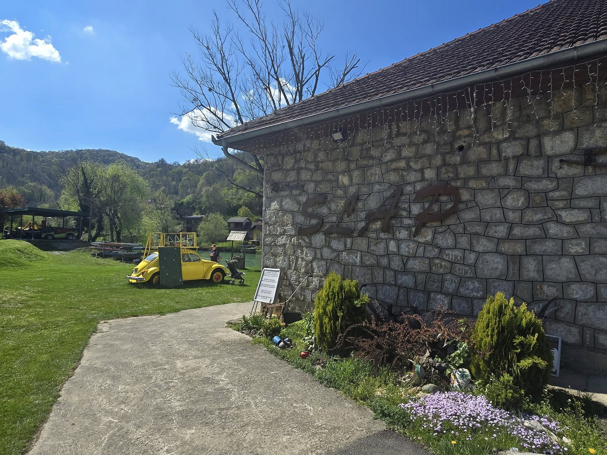
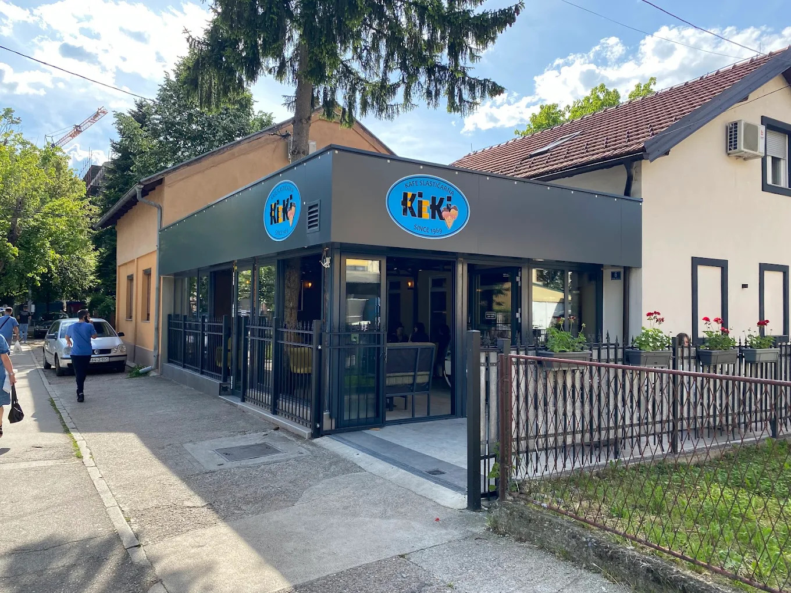
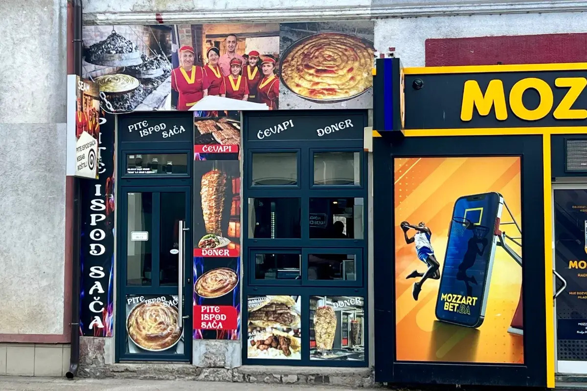
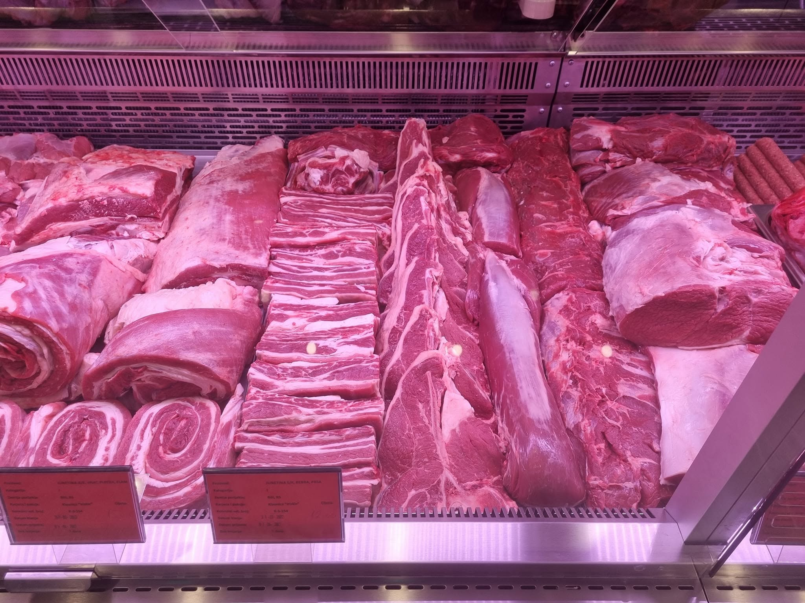
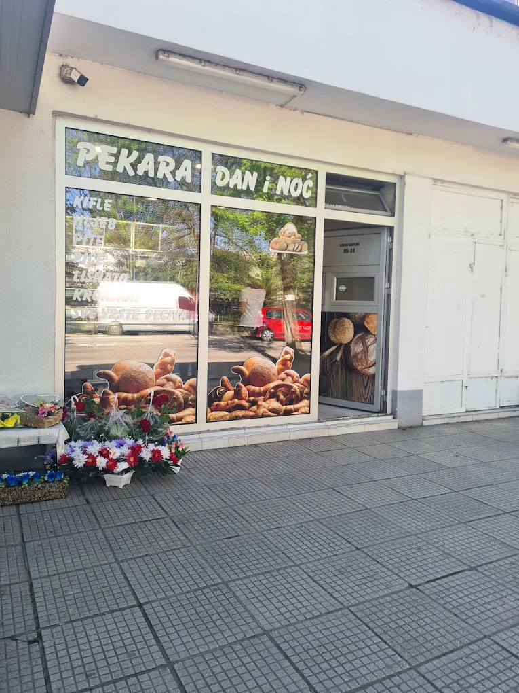
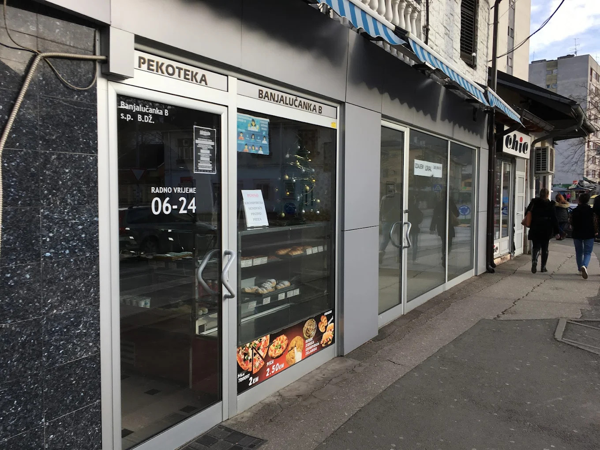
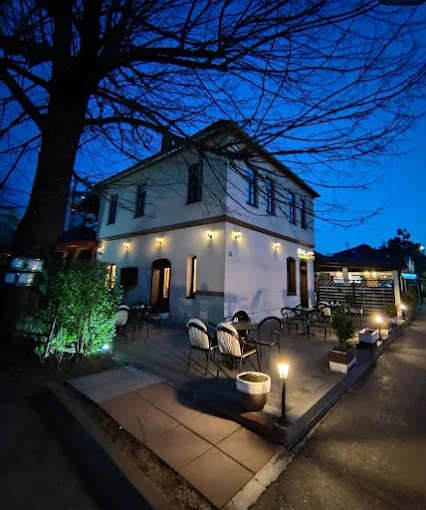
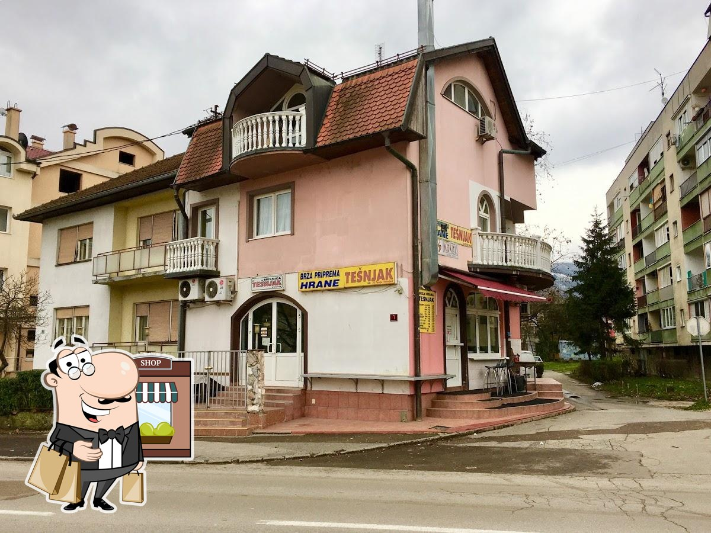
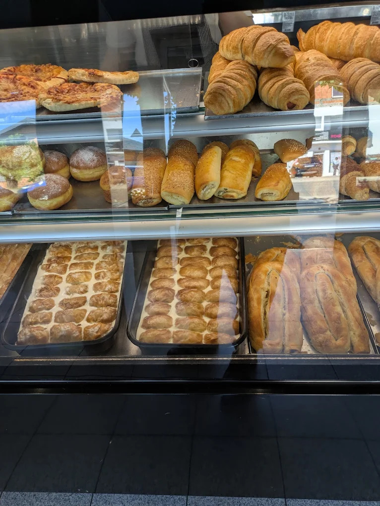

Muslim Dining in Banja Luka
Discover certified halal restaurants, Muslim-owned cafes and food stores across the city
Muslim Food Places

Slap Restaurant
Authentic Bosnian cuisine with certified halal meat, traditional dishes and Bosnian coffee.

Cafe Kiki
Cozy cafe serving good pastries, Bosnian coffee, and light meals.

Seam
Traditional Bosnian burek and pita with certified halal ingredients.

Mesnica Iriskic
Trusted butcher offering high-quality fresh meats, owned by a local Muslim family.

Pekara Dan i Noć
Family-run bakery known for its fresh bread, clean service, and strong Islamic values.

Banjalučanka B
Popular dual bakery and dessert shop offering sweet and savory treats in a Muslim-friendly environment.

Pod Lipom
Ćevapi and grilled dishes prepared with halal meat from Mesnica Iriskic. *Note: Alcohol is served on premises.*

Mesnica Tesnjak
Local Muslim-friendly butcher with attached fast food service. Less frequented but a solid option.

Pekara Biser
A little outside the city center, this bakery offers Muslim-friendly pastries and snacks, open 24/7.